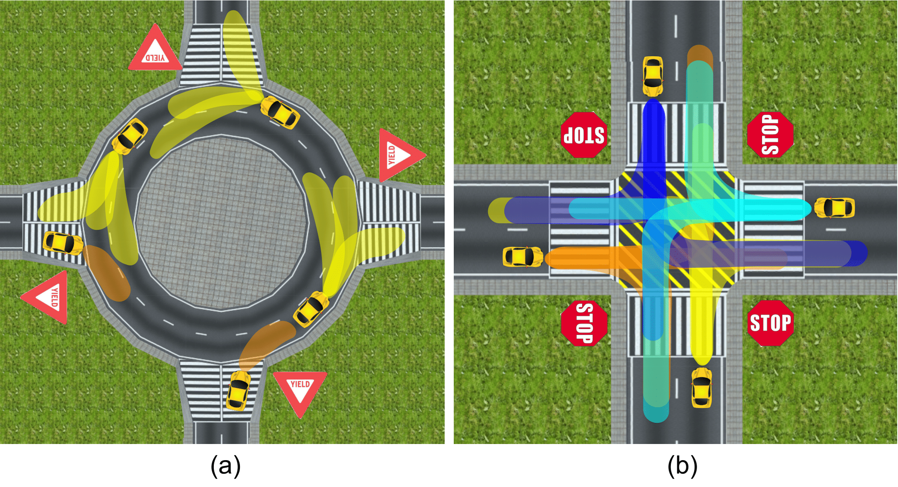

|
Research and Projects
Interaction-Aware Probabilistic Behavior and Trajectory Prediction
The research aims at recognizing driver behaviors and traffic situations as well as predicting future trajectories for
multiple highly interactive agents jointly. The methodologies mainly cover Bayesian theories, probabilistic graphical models, deep
learning as well as computer vision techniques.
Effective understanding of the environment and accurate trajectory prediction of surrounding dynamic obstacles are critical for intelligent systems such as autonomous vehicles and wheeled mobile robotics navigating in complex scenarios to achieve safe and high-quality decision making, motion planning and control.
|
 |
In this work, in order to tackle the task of probabilistic prediction for multiple, interactive entities, we propose a coordination and trajectory prediction system (CTPS), which has a hierarchical structure including a macro-level coordination recognition module and a micro-level subtle pattern prediction module which solves a probabilistic generation task. We illustrate two types of representation of the coordination variable: categorized and real-valued, and compare their effects and advantages based on empirical studies. We also bring the ideas of Bayesian deep learning into deep generative models to generate diversified prediction hypotheses.
[IV2019][Website]
In this work, we propose a conditional generative neural system (CGNS) for probabilistic trajectory prediction to approximate the data distribution, from which realistic, feasible and diverse future trajectory hypotheses can be sampled. The system combines the strengths of conditional latent space learning (CLSL) and variational divergence minimization (VDM), and leverages both static context and interaction information with soft attention mechanisms. We also propose a regularization method for incorporating soft constraints into deep neural networks with differentiable barrier functions, which can regulate and push the generated samples into the feasible regions.
[Preprint][Website]
|
 |
In this work, we take advantage of the Generative Adversarial Network (GAN) due to its capability of distribution learning and propose a generic multi-agent probabilistic prediction and tracking framework which takes the interactions among multiple entities into account, in which all the entities are treated as a whole. However, since GAN is very hard to train, we make an empirical research and present the relationship between training stability, training performance and hyperparameter values with a numerical case study. Moreover, we apply the proposed approach to a real-world vehicle tracking and behavior prediction task to demonstrate its effectiveness and accuracy. The well-trained model can also be utilized as an implicit proposal distribution for particle filtered based Bayesian state estimation which can improve tracking accuracy.
[ICRA2019][Website]
|
 |
In this work, we propose a generic probabilistic hierarchical recognition and prediction framework for hierarchical time-series
prediction, which consists of a behavior recognition module and a state evolution module， which employs a Deep Hidden Markov Model (DHMM) to obtain the distribution of potential situations and a learning-based dynamic scene evolution model to sample a group of future trajectories. Both modules in the proposed model are generic and flexible so as to be applied to a class of time-series prediction problems where behaviors can be separated into different levels. Instead of predicting motions of a single entity, we propose to get the joint distribution by modeling multiple interactive agents as a whole system. Moreover, due to the decoupling property of the layered structure, our model is suitable for knowledge transfer from simulation to real world applications as well as among different traffic scenarios, which can reduce the computational efforts of training and the demand for a large data amount. The proposed approaches have been evaluated from multiple aspects, which demonstrates great potential for intelligent vehicular systems and traffic surveillance systems.
[ITSC2018][Paper2][Website]
|
Occluded Multi-Object Tracking and Motion Prediction
The research aims at realizing accurate and robust tracking of surrounding traffic participants simultaneously in a uniform framework as well as handling partial or complete occlusions by incorporating learning-based behavioral models to make long-term motion prediction. The methodologies mainly covers sequential Monte Carlo, deep learning and probabilistic graphical models.
 |
In this work, we propose a constrained mixture sequential Monte Carlo (CMSMC) method in which a mixture representation is incorporated in the estimated posterior distribution to maintain multi-modality. Multiple targets can be tracked simultaneously within a unified framework without explicit data association between observations and tracking targets. The number of mixture components and particles can adaptively evolve according to observations. Most tracking approaches for vehicle tracking employ kinematic models as the prediction model. However, it is hard for these models to make proper predictions when sensor measurements are lost or become low quality due to partial or complete occlusions. Therefore, the hierarchical time-series prediction model is employed as an implicit proposal distribution of CMSMC method so that a unified tracking and prediction framework is formulated, which makes a bridge for multi-target tracking and multi-agent prediction.
[IV2018][Paper2][Video][Website]
|
Solving Constrained Optimization Problems with Neural Networks
The research aimed at incorporating soft constraints into neural networks to solve nonlinear optimization problems.
The proposed approach was used to obtain future trajectories of the ego vehicle.
 |
Policy networks have great potential to learn sophisticated driving policy under complicated interaction between human drivers. However, it is hard for policy networks to satisfy safety and feasibility constraints, which is not a challenging task for conventional motion generation methods, such as optimization-based approach. In this paper, we propose Constrained Policy Net (CPN), which can learn safe and
feasible driving policy from arbitrary inequality-constrained optimization-based expert planners. Instead of supervised learning with L2 norm as the loss, we incorporate the domain knowledge of the expert planner directly into the training loss of the policy net by applying barrier functions to the safety and feasibility constraints of the optimization problem. An exemplar scenario with obstacles on both sides is used to implement the proposed CPN. Test results demonstrate that the policy net can learn to generate motions near boundaries of safety and feasibility constraints to achieve high driving quality as the baseline optimization while the constraints are satisfied.
[IECON2017]
|
|